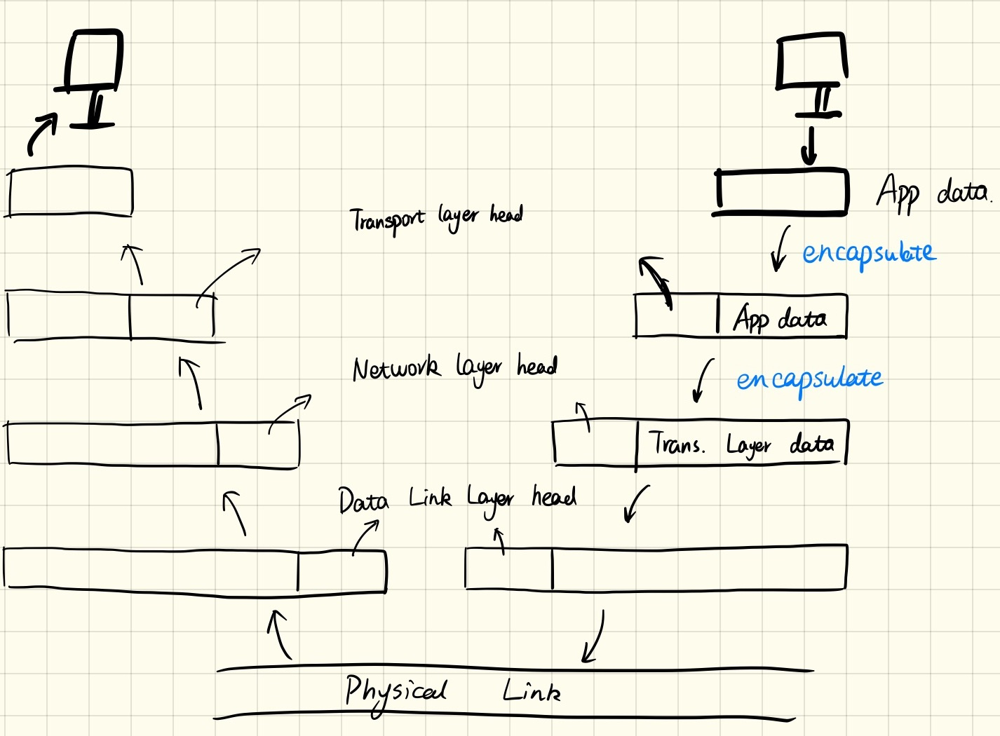
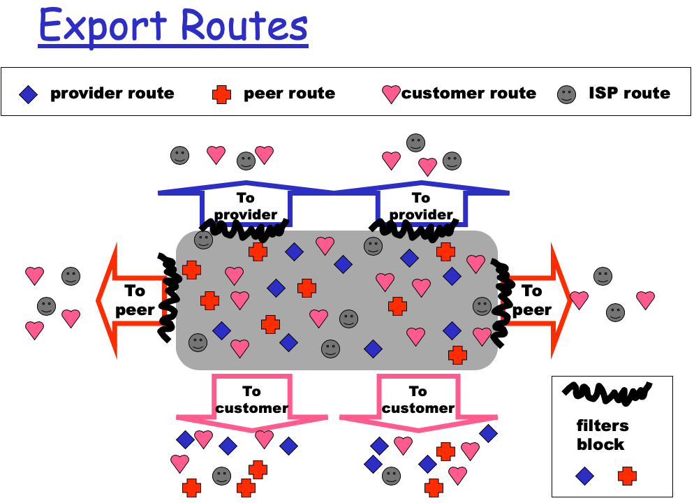
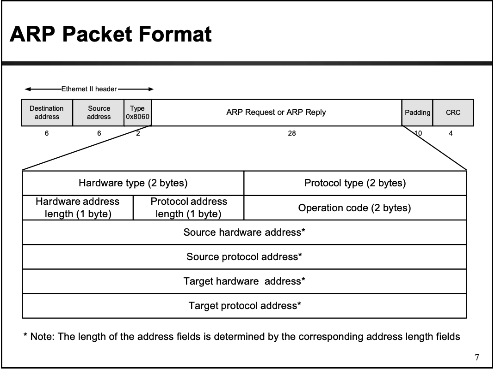

Computer Network(Top-to-down)
this is a brief summary of my 2019spring course, computer network. During this course, we talk about 4 main layers in current network architecture. They are Application layer, Transport layer, Network layer and Data Link layer. We also have 3 projects for Application layer. Transport layer, and network layer.
This course is offered by Prof. Yan Chen
[TOC]
0 Instruction
The most important thing in this class is to understand what we really want to do and how we do it. Currently, we all can connect to the Internet, we can use browser to see many different webpages, we can use laptop to play games, we can ssh, we can download, we can do almost anything we want. But how we do this?
Let’s say all these things are called application data, which is really familiar to CS student or related-to-CS majors students. We cannot just pass this original application data to others, right? Why? Because we don’t know what to do, you just give me the data, where should I go? Like you want to deliver a package but you NEED address to locate the destination! That’s why we ENCAPSULATE the original data into a packet(usually TCP or UDP), which will indicates some information about this application data and how to deal with it. But in reality, we all know that in order to deliver a package, the address is not the only thing necessary, we also need ZIP, need car or trunk, and even receivers’ phone number. This all of them will help us to deliver a package correctly.
Yes, transport layer, network layer and data link layer are doing the stuff. More accurately, we can say transport layer just a car, network layer and data link layer indicate the address of a packet. We will encapsulate them one by one, and break them down one by one.
Here is a brief illustration of this process.

1 Application Layer
The communication between different application is in fact process communicating. Usually we use sockets.
1.1 Web and HTTP
1.2 Electronic Mail
1.3 DNS
2 Transport Layer
2.1 UDP
2.1.1 checksum
2.2 reliable transfer protocol
2.2.1 rdt1.0 & rdt 2.0
2.2.2 rdt2.1 & rdt 2.2
2.2.3 rdt3.0 (stop-and-wait)
2.2.4 Go-Back-N & selective repeat
2.3 TCP
2.3.1 seq # & acks
2.3.2 Fast Retransmit
2.3.3 Flow Control & Congestion Control
3 Network Layer
3.1 Forwarding Table
3.2 IP datagram format
3.3 NAT
It will alter the source IP to routers IP and other port #, so it also have a mapping table between port # of router and the host.
3.4 Routering Algorithms
Link-state(LS): Dijkstra
Distance Vector(DV): Bellman-Ford
3.5 Hierarchy Routing
We can’t store all dest’s in routing tables. Routing table exchange would swamp links! So we aggregate routers into regions, called “Autonomous systems”(AS). When we have hierarchy, we need to consider the routing between AS and inside AS, also called inter-AS and intra-AS.
Intra-AS usually uses OSPF and RIP to router. The former is used in upper-tier ISPs and RIP is used in ISPs and enterprise networks.[Note: OSPF uses LS while RIP uses DV]
Inter-AS usually uses BGP, and BGP is split into iBGP(internal BGP) and eBGP(external BGP). BGP uses DV.
Routing policy:
We classify 4 types router information, provider, customer, peer and ISP. For an AS, it will receive and store all incoming router information but for different people, they provide different message. Here is the illustration. (From Prof. Yan Chen slides)

4 Data Link Layer
4.1 MAC address
Because IP is fixed in a given area like ZIP code, so how we identify a unique user under the same IP? This is why we need another address to locate a user and this address is called MAC address.
MAC address is 48bits in such format:xx-xx-xx-xx-xx-xx.
4.2 Error detection and correction
We use CRC error detection in this layer and add CRC at the end of frame. Also, we talk about parity bit and 2-dimension parity bit.
4.3 Hub and Switch
Hub is a dumb device, just knows repeating one’s information to other(broadcast). But switch is smarter than hub, it will selectively to forward frame to different interface. This help switch to isolate collision domains. In reality, it seems another way to isolation collision domain called VLAN. But it is not the scope of this class.
In reality, many devices share the media, that causes collision among them. So we can use Channel Partition(TDMA or FDMA) or Random Access(Aloha or CSMA) to solve this problem.
4.4 ARP
We use this to get the MAC address of other host. It is very important that the source and destination MAC in ARP is different with those in the head of Ethernet head, which is used to addressing. Here is an ARP message format(from http://www.cs.virginia.edu/~cs458/slides/module06-arpV2.pdf)

The one thing I don’t understand is that ARP is used to obtain MAC, and MAC is only used to addressing under the same subnet. WHY do we consider a scenario that one host A want to get another host B’s MAC address in a different subnet?
Host A won’t send ARP to host B because they are not in the same subnet, host A will just send ARP to request gateway’s MAC address.